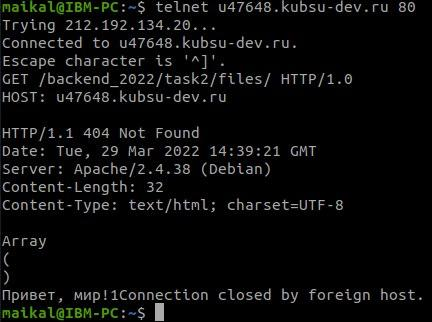
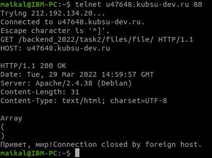
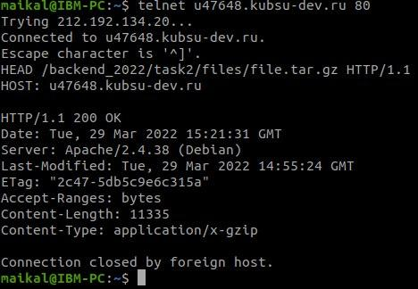
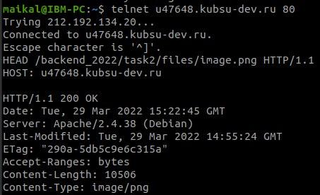
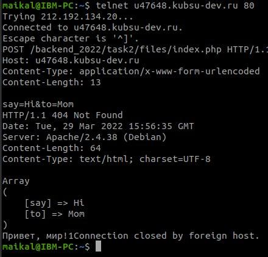
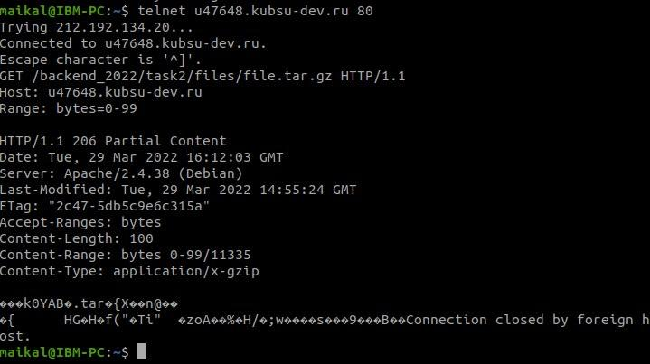
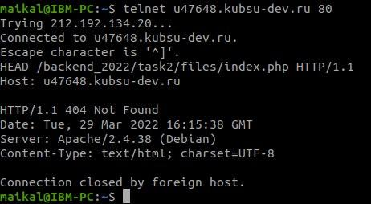

1) получить главную страницу методом GET в протоколе HTTP 1.0

2) получить внутреннюю страницу методом GET в протоколе HTTP 1.1

3) определить размер файла file.tar.gz, не скачивая его

4) определить медиатип ресурса /image.png

5) отправить комментарий на сервер по адресу /index.php

6) получить первые 100 байт файла /file.tar.gz

7) определить кодировку ресурса /index.php
